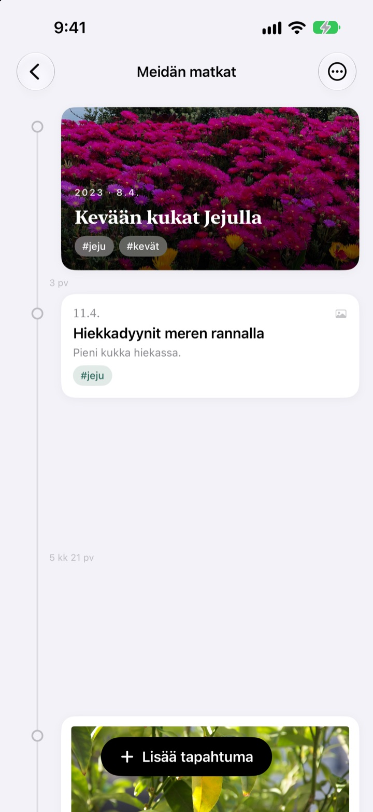
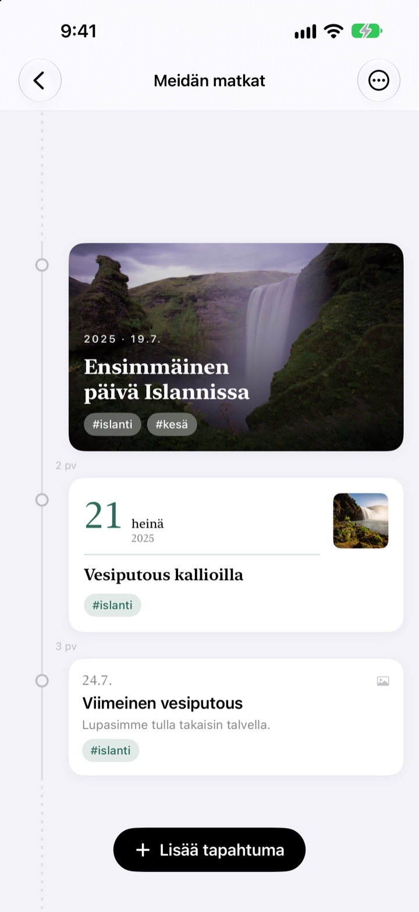
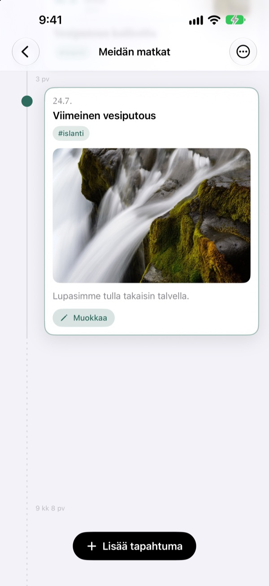
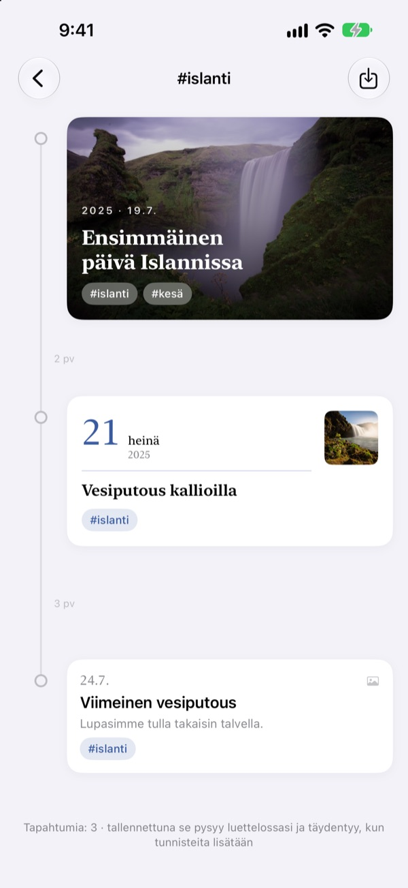
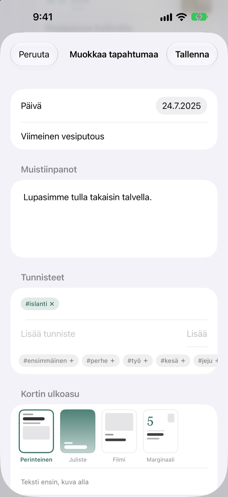

Aikajana, joka
venyy ajan mukana
Kolme päivää ja viisi päivää ovat suhteessa 3:5. Pitkä tauko, kuten kaksi vuotta ja neljä kuukautta, taittuu katkoviivaksi. Jo väleistä näkee, miten aika silloin kului.
Kaikki ominaisuudet ovat ilmaisia. iPhonelle ja iPadille.

Venytä välejä itse
Jokainen painike lisää uuden tapahtuman viimeisen perään. Välit lasketaan samalla säännöllä kuin sovelluksessa.
Kuvakirjastosta ei näe aikaa
Kuvakirjasto järjestää kaiken päivämäärän mukaan, mutta kolme päivää ja kaksi vuotta vievät siinä saman yhden askeleen. Yeoul asettaa tapahtumat yhtä kauas toisistaan kuin niiden välillä kului aikaa, joten näet heti, milloin tapahtui paljon ja milloin oli hiljaista.
Väli on aikaa
Koko aikajanalla on yksi mittakaava: sama ajanjakso on yhtä pitkä missä tahansa näytöllä. Jokaisen välin vieressä lukee todellinen kesto, esimerkiksi 3 pv tai 5 kk 21 pv.
Hyvin lähekkäiset tapahtumat saavat silti vähän tilaa, ja hyvin pitkät tauot taittuvat katkoviivaksi.

Se löytää sen päivän kuvat
Valitse päivämäärä ja napauta Etsi liittyviä kuvia, niin näet sinä päivänä otetut kuvat. Eikö mikään sovi? Etsi itse ja valitse.
Napauta tapahtumaa aikajanalla, niin kuva ja teksti avautuvat juuri siihen kohtaan.

Yksi tunniste kokoaa hajallaan olevat hetket
Lisää tapahtumiin tunniste, kuten #Islanti, napauta sitä, ja kaikki sen tunnisteen tapahtumat kaikilta aikajanoiltasi kokoontuvat uudelle.
Tallenna se, niin se jää listaasi ja ottaa itse mukaan uudet samalla tunnisteella merkityt tapahtumat.

Jokaiselle hetkelle sopiva kortti
Perinteinen nostaa tekstin etusijalle, Juliste täyttää kortin kuvalla, Filmi kehystää sen kuin paperikuvan ja Marginaali antaa ison päivämäärän olla pääosassa. Esikatselu vaihtuu heti.

Alkuun kolmessa vaiheessa
- 1
Luo aikajana
Lapsen ensimmäinen vuosi, parisuhde, matka: jokaiselle oma nimi ja väri.
- 2
Lisää tapahtumia
Kirjoita päivämäärä ja otsikko ja liitä kuva siltä päivältä.
- 3
Lisää tunnisteet
Saman tunnisteen tapahtumat kokoontuvat yhteen aikajanasta riippumatta.
Neljä korttityyliä
- Perinteinen
- Teksti edellä, kuva alla.
- Juliste
- Kuva täyttää koko kortin ja päällä on iso otsikko. Ilman kuvaa kortti saa aikajanan värin.
- Filmi
- Kuva reunuksineen kuin paperikuva, kirjoituskoneteksti ja päivämääräleima.
- Marginaali
- Iso päivämäärän numero ja pieni kuva. Tässä pääosassa ovat sanat.
Uusi tapahtuma alkaa samalla tyylillä kuin aikajanan uusin kortti.
Kaikki ominaisuudet ovat ilmaisia
Ilmainen
- Niin monta aikajanaa kuin haluat, nimellä ja värillä
- Kuvat, tarinat ja tunnisteet jokaiseen tapahtumaan
- Tapahtumapäivän kuvien haku
- Tallennetut tunnisteaikajanat
- Neljä korttityyliä
- iCloud-synkronointi iPhonen ja iPadin välillä
- Kirjaaminen Pikakomennoilla ja Sirillä
Tue kehittäjää
- Valitse pieni, keskikokoinen tai iso tippi
- Se ei avaa mitään. Se on vain tapa sanoa kiitos
Löydät sen sovelluksen asetuksista, kun siltä tuntuu.
Ei mainoksia, ei tilausta.
Usein kysyttyä
Miksi tapahtumien välit ovat niin erilaisia?
Yeoul asettaa tapahtumat yhtä kauas toisistaan kuin aikaa todella kului. Kaikilla väleillä on sama mittakaava, joten kolme päivää ja viisi päivää ovat suhteessa 3:5. Hyvin lähekkäiset tapahtumat saavat vähimmäisvälin, jotta ne eivät mene päällekkäin, ja hyvin pitkät tauot taittuvat katkoviivaksi, jonka vieressä lukee todellinen kesto, kuten 2 v 4 kk.
En näe sen päivän kuvia.
Päivämäärän mukainen haku tarvitsee pääsyn kuviisi. Salli se kohdassa Asetukset > Yeoul > Kuvat. Yeoul etsii kuvia, jotka on otettu sinä päivänä keskiyöstä keskiyöhön laitteen aikavyöhykkeellä. Jos et halua antaa pääsyä, napauta heti alla olevaa Etsi itse.
Mikä on tunnisteaikajana?
Napauta tapahtuman tunnistetta, niin Yeoul kokoaa kaikki sen tunnisteen tapahtumat kaikilta aikajanoiltasi yhdelle. Usein katsomasi voit tallentaa listaan. Mitään ei kopioida: kun muokkaat alkuperäistä tapahtumaa, muutos näkyy myös täällä, ja tunnisteaikajanan poistaminen ei poista tapahtumia.
Miksi tunnisteaikajanalle ei voi lisätä tapahtumia?
Tunnisteaikajana on tunnisteen mukaan koottu näkymä, ei paikka tapahtumien säilyttämiseen, joten ei voi tietää, mille aikajanalle uusi tapahtuma kuuluisi. Lisää se omalle aikajanalleen tunnisteen kanssa, niin se ilmestyy tänne itsestään.
Voinko kirjata jotain avaamatta sovellusta?
Voit. Käytä Kirjaa tapahtuma -toimintoa Pikakomennot-apissa tai Sirillä ja valitse vain aikajana ja otsikko. Ilman päivämäärää käytetään nykyistä aikaa.
Näenkö aikajanani muilla laitteilla?
Kyllä, jokaisella iPhonella ja iPadilla, joka on kirjautunut iCloudiin samalla Apple-tilillä. Tarkista kohdasta Asetukset > nimesi > iCloud, että iCloud on päällä. Yhteydestä riippuen muutokset voivat näkyä pienellä viiveellä.
Miten poistan tietoni?
Pyyhkäise aikajanaa listassa vasemmalle tai napauta Muokkaa. Aikajanan mukana poistuvat myös sen tapahtumat. iCloudiin jääneet tiedot poistat iCloud-asetusten tallennustilan hallinnasta.
Näkeekö kehittäjä tietoni?
Ei. Tapahtumasi ja kuvasi ovat vain laitteillasi ja omassa iCloudissasi, eikä kehittäjä näe niitä. Lisätietoja on alla olevassa tietosuojakäytännössä.
Miten ilmoitan virheestä tai ehdotan jotain?
Suoraan sovelluksen asetuksista, sähköpostilla tai Instagramissa @lee25_ios. Kerro laitteen malli, iOS-versio ja mitä tapahtui, niin pystymme auttamaan nopeammin.
Kysyttävää tai ideoita? Kirjoita osoitteeseen leeo@kakao.com.